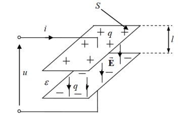
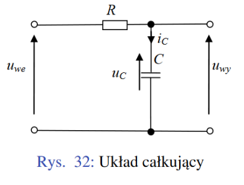
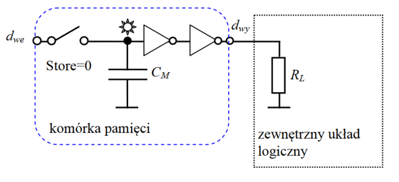
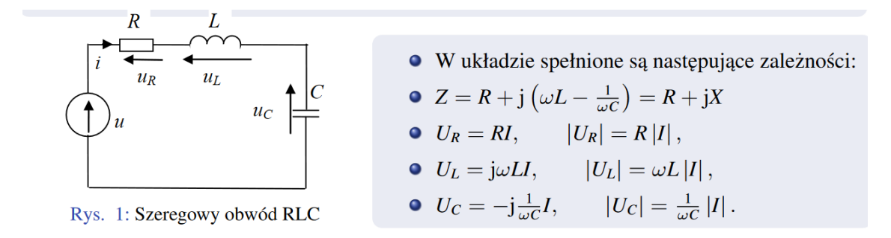
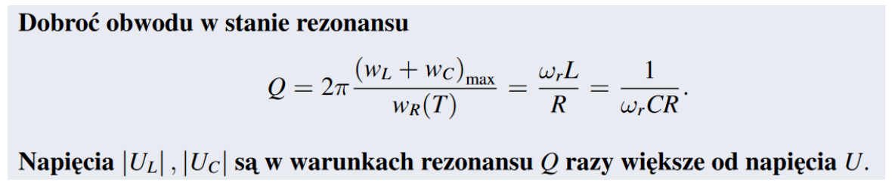
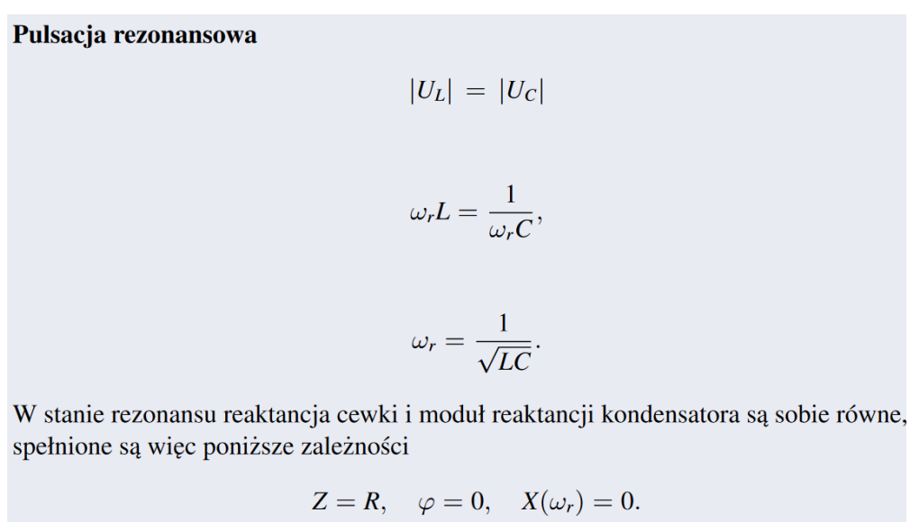

Pole elektrostatyczne: Pole elektryczne wytwarzane przez nieruchome ładunki.
Ładunek elektryczny: Cecha cząstek elementarnych, która powoduje, że podlegają one oddziaływaniom elektromagnetycznym. Dwa rodzaje ładunków: dodatnie i ujemne. Jednostką ładunku elektrycznego jest kulomb (C).
Napięcie elektryczne: Różnica potencjałów między dwoma punktami, jednostką jest wolt (V).
Wytrzymałość elektryczna: Największa wartość natężenia pola elektrycznego, która nie wywołuje przebicia lub przeskoku iskry.
Przykładowe dielektryki: Papier, szkło, suche drewno, bursztyn, mika, ebonit.
Zastosowania dielektryków: Izolowanie elementów urządzeń elektrycznych, materiały izolacyjne w przemyśle elektrycznym i elektronicznym, kondensatory, transmisja sygnałów (np. światłowody).
Podział ciał pod względem właściwości elektrycznych:
Przewodniki: Ładunki elektryczne mogą swobodnie przemieszczać się w całej ich objętości.
Przykłady: Miedź, złoto, srebro, aluminium.
Zastosowania: Przesyłanie energii elektrycznej, przewody energetyczne, grzałki elektryczne, silniki, generatory.
Dielektryki (izolatory): Ładunki elektryczne pozostają w miejscach, w których zostały początkowo umieszczone.
Przykłady: Bursztyn, szkło, papier, mika, ebonit.
Zastosowania: Materiały izolacyjne, kondensatory, transmisja sygnałów (światłowody).
Półprzewodniki: Właściwości elektryczne pośrednie między przewodnikami a dielektrykami.
Przykłady: Krzem, german, arsenek galu.
Zastosowania: Panele słoneczne, diody, tranzystory, czujniki temperatury, układy scalone.
Element obwodu: Model pewnego zjawiska lub cechy fizycznej związanej z obwodem elektrycznym.
Schemat obwodu: Graficzny obraz obwodu pokazujący połączenie elementów reprezentowanych za pomocą odpowiednich symboli.
Sygnał: Funkcja jednej lub więcej zmiennych niezależnych.
Rodzaje sygnałów:
Sygnał ciągły: Określony w każdej chwili czasu.
Sygnał dyskretny: Określony w dyskretnych chwilach czasu.
Sygnał cyfrowy: Dyskretny sygnał, który przyjmuje tylko określone wartości (0 i 1), odporny na zakłócenia.
Kierunek odniesienia: Dla każdego prądu przyjmuje się kierunek odniesienia zaznaczony za pomocą strzałki, co umożliwia określenie rzeczywistego prądu.
Stowarzyszone kierunki odniesienia: Jeżeli strzałki prądu i napięcia mają przeciwne zwroty, prąd i napięcie mają stowarzyszone kierunki odniesienia.
Połączenia między elementami: Zwykle traktowane są jako idealne przewody, które nie wprowadzają dodatkowych oporów ani zakłóceń do obwodu.
Moc: Określa pracę wykonaną w ciągu jednostki czasu i jest wyrażana w watach (W).
Energia: Zdolność ciała do wykonania pracy, wyrażana w dżulach (J).
Moc chwilowa: Iloczyn napięcia \(u(t)\) oraz prądu \(i(t)\): \(p(t) = u(t) \cdot i(t)\).
Wyższe napięcie: Aby uzyskać wyższe napięcie, baterie należy połączyć szeregowo (dodatni zacisk pierwszego ogniwa z ujemnym zaciskiem drugiego itd.).
Większy prąd: Aby uzyskać większy prąd, baterie należy połączyć równolegle (dodatni zacisk z dodatnim itd.).
Opornik liniowy: Element bierny obwodu elektrycznego, który ogranicza prąd.
Najważniejsze parametry opornika liniowego:
- Rezystancja znamionowa: Oczekiwana rezystancja rezystora.
- Tolerancja rezystancji: Maksymalne dopuszczalne odchylenie od rezystancji znamionowej.
- Moc znamionowa: Maksymalna moc, jaką rezystor może wydzielać przy pracy ciągłej.
- Temperaturowy współczynnik rezystancji: Zmiany rezystancji pod wpływem temperatury.
- Napięcie graniczne: Maksymalne napięcie, jakie może być przyłożone do rezystora.
- Rezystancja krytyczna: Rezystancja, przy której rezystor działa optymalnie.
- Napięcie szumów: Poziom szumów generowanych przez rezystor.
Prawo Ohma: \( u = Ri \), gdzie \( u \) to napięcie, \( R \) to rezystancja, a \( i \) to prąd.
Moc w oporniku: \( p(t) = \frac{1}{R} (u(t))^2 \).
Zależność rezystancji od wymiarów: \( R = \rho \frac{l}{S} \), gdzie \( \rho \) to opór właściwy, \( l \) to długość, a \( S \) to przekrój.
Zależność rezystancji od temperatury: \( R_t = R_0 (1 + \alpha (T_t - T_0)) \), gdzie \( \alpha \) to temperaturowy współczynnik oporu.
Energia dostarczana do opornika: Zamieniana jest na energię cieplną.
Prawa Kirchhoffa:
Napięciowe prawo Kirchhoffa (NPK): W każdej chwili czasu algebraiczna suma napięć gałęziowych w rozpatrywanej pętli równa się zeru. Składniki sumy algebraicznej piszemy ze znakiem plus, jeżeli kierunki napięć gałęziowych są zgodne z kierunkiem obiegu, i ze znakiem minus w przeciwnym przypadku.
Prądowe prawo Kirchhoffa (PPK): Dla każdego obwodu i dowolnego jego węzła, w każdej chwili algebraiczna suma prądów w gałęziach zbiegających się w tym węźle jest równa zeru. Prądowi przypisujemy znak plus, jeżeli jego kierunek jest od węzła, i znak minus, gdy strzałka prądu jest skierowana do węzła.
Pojęcia:
- Pętla: Zbiór elementów zaczynających się w jednym węźle, obejmujący kolejne połączone ze sobą gałęzie i kończący się w tym samym węźle.
- Oczko: Szczególny przypadek pętli, która nie ma w sobie żadnego elementu.
Maksymalna liczba niezależnych praw:
- PPK: Dla obwodu z \(A\) węzłami można ułożyć \(A - 1\) niezależnych PPK.
- NPK: Dla obwodu z \(A\) węzłami i \(B\) gałęziami można ułożyć \(B - A + 1\) niezależnych NPK.
- Łącznie: Dla obwodu z \(A\) węzłami i \(B\) gałęziami można ułożyć \(B\) niezależnych praw Kirchhoffa.
Połączenie szeregowe:
Prąd: Prąd płynie przez każdy element o tej samej wartości.
Rezystancja zastępcza: \( R_z = R_1 + R_2 \).
Dzielnik napięcia: Napięcie dzieli się proporcjonalnie do rezystancji (\( u = u_1 + u_2 \)).
Połączenie równoległe:
Napięcie: Napięcie na każdym elemencie jest takie samo.
Rezystancja zastępcza: \( \frac{1}{R_z} = \frac{1}{R_1} + \frac{1}{R_2} \).
Dzielnik prądu: Prąd dzieli się odwrotnie proporcjonalnie do rezystancji (\( i = i_1 + i_2 \)).
Szczególne przypadki:
Przerwa w połączeniu szeregowym: Prąd wynosi zero.
Zwarcie w połączeniu równoległym: Cały prąd płynie przez zwarcie.
Graf: Zbiór węzłów i gałęzi, gdzie każda gałąź łączy się z odpowiednim węzłem.
Graf zorientowany: Graf, w którym każda gałąź ma przyporządkowany zwrot.
Twierdzenie Tellegena: Jeżeli prądy gałęziowe \(i_k\) spełniają PPK w każdym węźle grafu oraz napięcia gałęziowe \(u_k\) spełniają NPK w każdej pętli grafu, to:
\[ \sum_{k=1}^{b} u_k i_k = 0 \]
gdzie \(b\) to liczba gałęzi grafu.
Wnioski: Suma mocy chwilowych dla wszystkich gałęzi obwodu jest równa zeru.
Zasada superpozycji: W obwodach liniowych odpowiedź na kilka wymuszeń jednocześnie jest sumą odpowiedzi na każde wymuszenie działające oddzielnie.
Przyrównanie do zera prądów źródłowych oznacza rozwarcie źródeł prądowych, a przyrównanie do zera napięć źródłowych oznacza zwarcie źródeł napięciowych.
Układy równoważne: Układy są równoważne, jeśli ich opis matematyczny jest taki sam. Rzeczywiste źródło napięcia jest równoważne rzeczywistemu źródłu prądu, jeśli ich opisy są identyczne.
Ilustracja:

Twierdzenie Thevenina:
Obwód liniowy można zastąpić szeregowym połączeniem źródła napięcia ez i rezystora Rz.
ez to napięcie na rozwartych zaciskach A, B.
Rz to rezystancja widziana z zacisków A, B po przyrównaniu do zera wszystkich napięć i prądów źródeł niezależnych.
Twierdzenie Nortona:
Obwód liniowy można zastąpić równoległym połączeniem źródła prądowego jz i rezystora o konduktancji Gz.
jz to prąd płynący w zwartej gałęzi AB.
Gz to konduktancja widziana z zacisków AB po przyrównaniu do zera wszystkich napięć i prądów źródeł niezależnych.
Twierdzenia te są używane do upraszczania analizy skomplikowanych obwodów elektrycznych, co ułatwia projektowanie, optymalizację i diagnostykę układów i sieci elektrycznych
Metoda napięć węzłowych:
Używana zamiast praw Kirchhoffa, ponieważ prowadzi do mniejszej liczby równań i jest mniej czasochłonna.
Równania na potencjały węzłowe układa się bezpośrednio z obwodu.
Radzi sobie dobrze ze źródłami prądowymi.
Różnice między półprzewodnikiem, przewodnikiem i izolatorem:
Przewodnik: Niski opór właściwy, swobodne elektrony walencyjne przewodzą prąd.
Półprzewodnik: Opór właściwy większy niż przewodników, ale mniejszy niż izolatorów. Właściwości elektryczne zależne od zanieczyszczeń i promieniowania zewnętrznego. Temperaturowy współczynnik oporu jest ujemny (rezystywność maleje ze wzrostem temperatury).
Izolator: Wysoki opór właściwy, elektrony walencyjne są silnie związane z atomami i nie przewodzą prądu. Energia potrzebna do wyrwania elektronu z orbity walencyjnej jest większa niż w półprzewodnikach.
Nośniki w półprzewodnikach: Elektrony i dziury (nośniki dodatnie).
Półprzewodnik samoistny: Idealnie czysty, bez domieszek i defektów sieci krystalicznej.
Półprzewodnik domieszkowany: Zawiera celowe zanieczyszczenia (domieszki) wprowadzone w procesie produkcji.
Domieszki donorowe (typ n): Dostarczają elektrony, np. fosfor.
Domieszki akceptorowe (typ p): Przyjmują elektrony, tworząc dziury, np. bor.
Złącze p-n: Złącze p-n to połączenie dwóch warstw półprzewodnika typu p i n, różniących się rodzajem domieszkowania.
Warstwa zaporowa: Obszar w złączu p-n, gdzie nie ma swobodnych nośników ładunku, tworzy się po zetknięciu warstw typu p i n.
Rodzaje prądów:
- Prąd dyfuzji: Przenoszenie nośników większościowych (elektronów z warstwy n do p i dziur z warstwy p do n).
- Prąd unoszenia: Przenoszenie nośników mniejszościowych (elektronów w warstwie p i dziur w warstwie n).
Polaryzacja zaporowa: Zewnętrzne napięcie zwiększa barierę potencjału, zmniejsza prąd dyfuzji do zera, a prąd unoszenia pozostaje stały, co skutkuje niewielkim prądem nasycenia.
Polaryzacja w kierunku przewodzenia: Zewnętrzne napięcie zmniejsza barierę potencjału, zwiększa prąd dyfuzji nośników większościowych, co skutkuje znacznym wzrostem prądu.
Charakterystyka prądowo-napięciowa: Opisuje zależność prądu od napięcia w złączu p-n, wyrażona równaniem:
\[ i = I_s \left( e^{\frac{u}{V_T}} - 1 \right) \]
gdzie \( I_s \) to prąd nasycenia, \( V_T \) to potencjał elektrokinetyczny, \( k \) to stała Boltzmanna, \( q \) to ładunek jednostkowy, a \( T \) to temperatura w kelwinach.
Układ logiczny: Układ elektroniczny, w którym sygnały napięciowe przyjmują dwa poziomy, przypisywane cyframi 0 i 1, realizujący operacje zgodnie z algebrą Boole’a.
Układ kombinacyjny: Układ logiczny, w którym sygnały wyjściowe zależą tylko od aktualnego stanu wejść.
Układ sekwencyjny: Układ logiczny, w którym stan wyjść zależy od aktualnego stanu wejść oraz stanów poprzednich (posiada pamięć).
Specyfikacje standardowe: Zasady zapewniające, że układy prawidłowo interpretują dane wejściowe i generują prawidłowe sygnały wyjściowe zgodnie z obraną reprezentacją.
Reprezentacja standardów napięć dla zasilania 5V:
- VOH: Logiczna wartość "1"
- VIH: Margines zakłóceń dla "1"
- VIL: Obszar zabroniony
- VOL: Logiczna wartość "0"
- VIL: Margines zakłóceń dla "0"
Model typu S tranzystora MOS:
- Stan ON: Tranzystor NMOS jest włączony, gdy napięcie \(u_{GS}\) przekracza napięcie progowe \(u_{t0}\) (1 V). W stanie ON, prąd płynie między drenem (D) a źródłem (S).
- Stan OFF: Tranzystor jest wyłączony, gdy \(u_{GS}\) jest mniejsze niż \(u_{t0}\). Prąd \(i_G = 0\).
Inwerter (bramka NOT) w modelu typu S:
- Stan High (1): MOSFET w stanie ON, napięcie wyjściowe niskie (0 V).
- Stan Low (0): MOSFET w stanie OFF, napięcie wyjściowe wysokie (Uz).
Model typu SR tranzystora MOS:
- Stan ON: Tranzystor zachowuje się jak rezystor \(R_{ON}\) między D i S.
- Stan OFF: Tranzystor wyłączony, prąd nie płynie.
- Charakterystyka prądowo-napięciowa: Uwzględnia rezystancję \(R_{ON}\) i efekty pojemnościowe.
Porównanie bramki NOT:
- Model typu S: Jeden tranzystor MOS, prosta charakterystyka przejściowa.
- Model typu SR: Dwa tranzystory MOS, bardziej złożona charakterystyka przejściowa z uwzględnieniem dodatkowych efektów.
Struktura tranzystora MOS:
Tranzystor MOS z długim kanałem składa się z dwóch regionów domieszkowanych n+ (źródło i dren) oraz bramki oddzielonej od kanału warstwą tlenku. Kanał przewodzący typu n formowany jest między źródłem a drenem, jego rezystancja \(R_{on}\) zależy od geometrii kanału (długości \(L\) i szerokości \(W\)).
Rezystancja kanału:
Rezystancja kanału \(R_{on}\) jest proporcjonalna do długości kanału \(L\) i odwrotnie proporcjonalna do szerokości \(W\):
\[ R_{on} = R_{\text{unit}} \frac{L}{W} \]
gdzie \(R_{\text{unit}}\) to jednostkowa rezystancja na kwadrat powierzchni.
Rodzina charakterystyk \(i_{DS} - u_{DS}\):
Charakterystyki pokazują zależność prądu drenu \(i_{DS}\) od napięcia drenu \(u_{DS}\) dla różnych wartości napięcia bramki \(u_{GS}\). Obszary:
- Odcięcia: \(u_{GS} < u_{T}\)
- Triodowy: \(u_{GS} \geq u_{T}\) i \(u_{DS} < u_{GS} - u_{T}\)
- Nasycenia: \(u_{DS} \geq u_{GS} - u_{T}\)
Zachowanie w obszarze nasycenia:
W obszarze nasycenia prąd drenu \(i_{DS}\) jest niezależny od \(u_{DS}\) i zależy głównie od \(u_{GS}\). Model: W obszarze nasycenia stosuje się model źródła prądowego sterowanego napięciem (model SCS - Switch Current Source).
Kondensator liniowy: Kondensator liniowy to element elektroniczny, który przechowuje energię w postaci pola elektrycznego. Składa się z dwóch równoległych płytek przewodzących (okładek) oddzielonych dielektrykiem o przenikalności elektrycznej \(\varepsilon\).
Podstawowe zależności:
- \( q = C \cdot u \) (ładunek \(q\) jest proporcjonalny do napięcia \(u\) przez pojemność \(C\))
- \( i = C \cdot \frac{du}{dt} \) (prąd \(i\) jest proporcjonalny do szybkości zmiany napięcia)
Własność pamięci: Kondensator pamięta poprzednie stany napięcia, ponieważ ładunek zgromadzony na okładkach nie zmienia się natychmiastowo.
Połączenie szeregowe: \[ \frac{1}{C_{sz}} = \frac{1}{C_1} + \frac{1}{C_2} + \ldots + \frac{1}{C_n} \]
Połączenie równoległe: \[ C_{r} = C_1 + C_2 + \ldots + C_n \]
Symbol kondensatora:

Cewka liniowa: Cewka liniowa to element elektroniczny, który przechowuje energię w postaci pola magnetycznego. Składa się z nawiniętego drutu, przez który przepływa prąd.
Podstawowe zależności:
- \( \phi = L \cdot i \) (strumień magnetyczny \(\phi\) jest proporcjonalny do prądu \(i\) przez indukcyjność \(L\))
- \( u = L \cdot \frac{di}{dt} \) (napięcie \(u\) jest proporcjonalne do szybkości zmiany prądu)
Własność pamięci: Cewka pamięta poprzednie stany prądu, ponieważ strumień magnetyczny nie zmienia się natychmiastowo.
Połączenie szeregowe: \[ L_{sz} = L_1 + L_2 + \ldots + L_n \]
Połączenie równoległe: \[ \frac{1}{L_{r}} = \frac{1}{L_1} + \frac{1}{L_2} + \ldots + \frac{1}{L_n} \]
Symbol cewki:

Warunki początkowe: Określają całkowitą wartość energii zgromadzonej w układzie w chwili \( t_0 \). Są to wartości \( i_L(t_0) \) oraz \( u_C(t_0) \) odpowiednio w cewkach i kondensatorach.
Stała czasowa: Czas, po którym składowa przejściowa maleje e-krotnie względem swojej wartości początkowej. Stan nieustalony trwa do 5 stałych czasowych.
Komutacja: Natychmiastowe włączenie, wyłączenie lub przełączenie elementu lub części obwodu.
Stan nieustalony: Powstaje bezpośrednio po komutacji i trwa, dopóki efekty wywołane włączeniem nie są pomijalne.
Stan ustalony: Układ jest w stanie ustalonym, gdy odpowiedzi w układzie mają taki sam charakter jak pobudzenia.
Równania w stanie nieustalonym: Opisują układ za pomocą równań różniczkowych. Rozwiązanie zawiera składowe swobodne i wymuszone.
Metody wyznaczania: Metoda klasyczna (rozwiązywanie równań różniczkowych) i metoda operatorowa (przekształcenie Laplace’a).
Układ całkujący RC składa się z rezystora \(R\) i kondensatora \(C\) połączonych szeregowo. Realizuje on swoją funkcję, ponieważ napięcie wyjściowe \(u_{wy}\) jest proporcjonalne do całki napięcia wejściowego \(u_{we}\) w czasie:
\[ u_{wy}(t) = \frac{1}{RC} \int_0^t u_{we}(\tau) d\tau + K \]
gdzie \(K\) jest stałą. Układy RC, w tym pasożytnicze, mogą wpływać na kształt sygnałów poprzez zmianę amplitudy, zniekształcenia, zmienne częstotliwości, opóźnienia czasowe i wprowadzenie szumów.
Działanie komórki pamięci dynamicznej opiera się na kondensatorze, który przechowuje ładunek przez pewien czas. Kondensator jest połączony z liniami bitowymi, umożliwiając zapis i odczyt bitów informacji. Podczas zapisu tranzystor włącza się, pozwalając na przepływ prądu i zapis ładunku na kondensatorze. Podczas odczytu tranzystor ponownie się włącza, a ładunek kondensatora jest odczytywany jako napięcie na linii bitowej. Bufor jest stosowany, aby zapobiec utracie ładunku kondensatora z powodu wycieku prądu, co zapewnia dłuższe przechowywanie informacji.
Rodzaje mocy rozpraszanej:
Moc statyczna (\(p_s\)): Straty mocy wynikające z przepływu prądu pobieranego ze źródła zasilania. Niezależna od szybkości zmian sygnału, ale może zależeć od stanu sygnałów wejściowych. Rozpraszana tylko, gdy bramki są włączone. Obliczana jako: \[ p_s = \frac{U_z^2}{R_L + R_{ON}} \]
Moc dynamiczna (\(p_d\)): Moc rozpraszana w wyniku przepływu prądu w stanie nieustalonym (ładowania i rozładowania kondensatorów). Zależy od szybkości zmian sygnału.
Korzyści stosowania układów CMOS w porównaniu do NMOS:
- Niskie zużycie energii.
- Wyższa odporność na zakłócenia.
- Szeroki zakres napięć zasilania.
- Mniejsza temperatura pracy.
- Wyższa gęstość integracji.
Wartość średnia: Średnia arytmetyczna wartości danej wielkości w określonym przedziale czasowym. Dla przebiegów okresowych, wartość średnia napięcia lub prądu wynosi zero.
Wartość skuteczna: Wartość prądu stałego, która dostarcza taką samą energię do odbiornika jak prąd zmienny w jednym okresie. Jest równa wartości szczytowej podzielonej przez pierwiastek z dwóch.
Impedancja (Z): Iloraz wartości symbolicznych napięcia i prądu. Jest liczbą zespoloną, obejmującą zarówno opór (rezystancję), jak i reaktancję.
Admitancja (Y): Odwrotność impedancji. Wyraża zdolność przepływu prądu przez elementy obwodu prądu zmiennego. Jest liczbą zespoloną, zawierającą przewodnictwo i reaktywność.
Zależności między wartościami symbolicznymi napięcia (V) i prądu (I):
- Rezystor: \( V = I \cdot R \)
- Cewka: \( V = j\omega L \cdot I \)
- Kondensator: \( I = j\omega C \cdot V \) lub \( V = \frac{I}{j\omega C} \)
Rodzaje mocy:
- Moc chwilowa (p(t)): Funkcja czasu, iloczyn wartości chwilowych napięcia \(u(t)\) i prądu \(i(t)\). Wzór: \( p(t) = u(t) \cdot i(t) = U_m I_m \sin(\omega t + \varphi_u) \sin(\omega t + \varphi_i) \).
- Moc czynna (P): Średnia wartość mocy chwilowej w okresie. Wzór: \( P = \frac{1}{T} \int_0^T p(t) \, dt = |U| |I| \cos \varphi \). Jednostka: Wat (W).
- Moc bierna (Q): Miara energii wymienianej między źródłem a odbiornikami o charakterze reaktancyjnym. Wzór: \( Q = |U| |I| \sin \varphi \). Jednostka: Var (var).
- Moc pozorna (S): Iloczyn wartości skutecznych napięcia i prądu. Wzór: \( S = |U| |I| \). Jednostka: Volt-amper (VA).
- Moc symboliczna (S): Liczba zespolona, część rzeczywista to moc czynna, część urojona to moc bierna. Wzór: \( S = P + jQ \).
Podstawowe wzory:
- \( P = |U| |I| \cos \varphi \)
- \( Q = |U| |I| \sin \varphi \)
- \( S = |U| |I| \)
- \( |S| = \sqrt{P^2 + Q^2} \)
Jednostki:
- Moc czynna: Wat (W)
- Moc bierna: Var (var)
- Moc pozorna: Volt-amper (VA)
Schemat: Szeregowy układ rezonansowy składa się z rezystora (R), cewki (L) i kondensatora (C) połączonych szeregowo.
Charakterystyka: Rezonans napięć występuje, gdy napięcia na cewce i kondensatorze kompensują się, a wartości skuteczne tych napięć są znacznie większe od wartości skutecznej napięcia zasilającego.
Najważniejsze parametry:
- Częstotliwość rezonansowa (\(\omega_r\)): \(\omega_r = \frac{1}{\sqrt{LC}}\)
- Dobroć (Q): Wskaźnik jakości układu rezonansowego, określający, jak dobrze układ przechowuje energię.
Zastosowania: Tunery radiowe, selektory kanałów w telefonach komórkowych i sieciach bezprzewodowych.
Modulacja: Zakodowanie informacji, będącej pewnym przebiegiem elektrycznym, w postaci zmiany parametru innego, nośnego przebiegu elektrycznego.
Sygnał modulujący: Sygnał zawierający użyteczną informację.
Sygnał modulowany: Sygnał, którego parametr podlega zmianie.
Najważniejsze rodzaje modulacji: Modulacja analogowa, modulacja impulsowa, modulacja cyfrowa, modulacja QAM, modulacja szerokości impulsów (PWM).
Zastosowania modulacji: Radiotechnika, przesyłanie transmisji radiowej i telewizyjnej, przesyłanie danych cyfrowych przez kanał radiowy (np. DVB).
Współczynnik DT: Współczynnik wypełnienia impulsów (duty cycle), stosunek czasu włączenia do okresu, zwykle podawany w %.